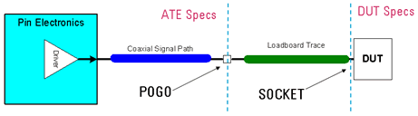
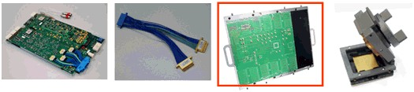

Signal integrity challenge
A major challenge in designing a DUT board is maintaining the signal integrity. Any imperfections in the signal path will increasingly distort the signal and signal quality will deteriorate.
The graphic below clearly shows that there is a difference between the performance of the ATE (Automated Test Equipment) at the pogo pin and the performance at the DUT pad.

The main components that define the signal integrity for an application are:
(from left to right) digital channel card, pogo assembly, DUT board, DUT socket.

As the DUT board designer you control the last two items, the DUT board and the DUT socket.
Loss factors
The loss on a signal trace depends on a series of factors as shown below.

The block diagram above shows the components influencing the loss of a PCB transmission line. Note that the impedance mismatches in the transmission line will also add a "reflection loss".
For high-speed DUT boards, skin effect and dielectric loss are typically the dominant loss factors.
Functional changes
- Introduced before SmarTest 6.3.2